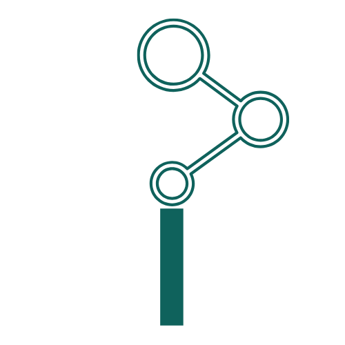

Get data exported from your tools
Send it over and I'll take it from there, nothing to set up.
Your evidence gets brought together
Patterns and themes surface, linked back to their source.

You see what's happening
What's new, what's changing, and the evidence behind it.
Your report Updated weekly
*Examples. Intuifi currently works by analysing data you export from one or more tools like these.
If your company has grown enough that revenue, product and customer service are each handled by their own team, you'll recognise these challenges.
Challenges
Evidence is scattered across teams and tools, making the full picture hard to see
It's on leaders to build the full picture, because no team sees it all
Using AI saves time, but without the evidence it is hard to trust the output
Outcomes
Get a shared view of evidence from across the tools your teams already use
See what emerges across every team, including patterns trapped in silos
Each finding links back to the source, so you can verify what you need to
“When I first joined the company, I needed to go through the entire backlog of over 400 tickets to decide what mattered and what didn't. The themes Intuifi found matched very closely with my own analysis, work that had taken almost six weeks was done in five minutes.”
Export your data, then choose how to submit it.

Chris Burgess
I am Chris Burgess, a product leader with 15 years of experience across startups, scale-ups, and a Fortune 100 company. I built Intuifi because I kept seeing how difficult it was for leaders to get a reliable picture of what was happening across a scaling business. Evidence was scattered across teams and tools, summaries lost context, and decisions were too often made without a clear view of what supported them. I am fixing that.
I'm focused on getting this snapshot report right first, a clear, one off picture of what's in your data today. Once that's proving useful, the natural next step is tracking how things change over time rather than a single point in time view. Here's what's next:
Now
Upload your data, get back a structured report with themes, priorities and evidence.
Next
Connect directly to the tools your team already uses.
Track how themes and issues change across reports over time.
Alert your team when new trends emerge.
Vibe coding tools make it easier than ever to build something that generates an initial output. The harder part is making it consistent, objective, and trustworthy enough to guide strategic business decisions. Doing it in-house brings back the exact problems you are trying to fix: